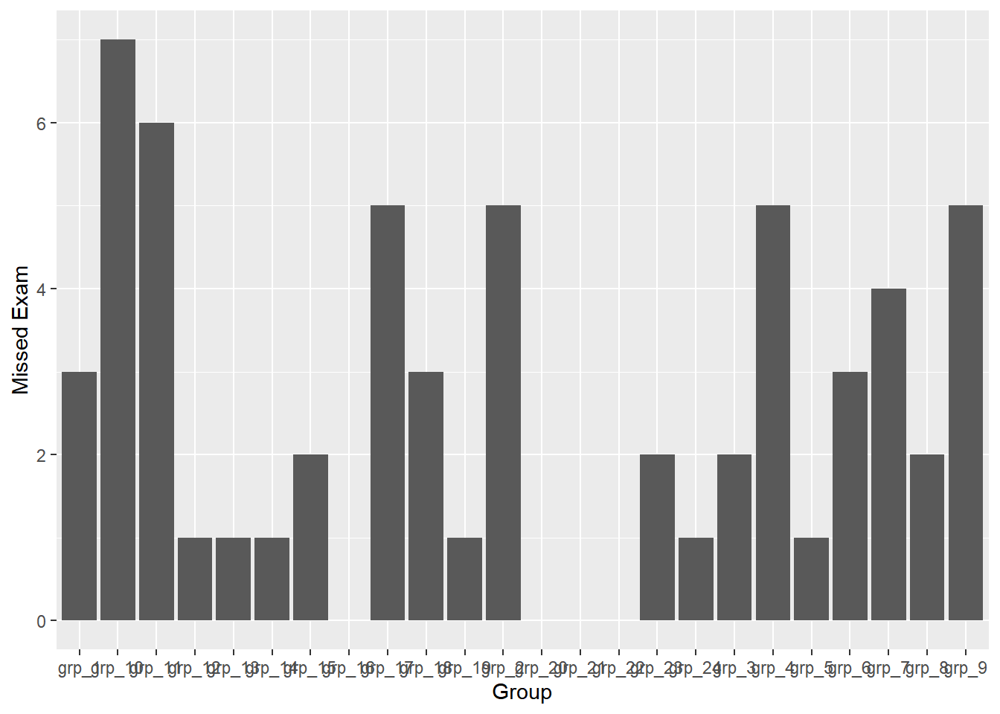
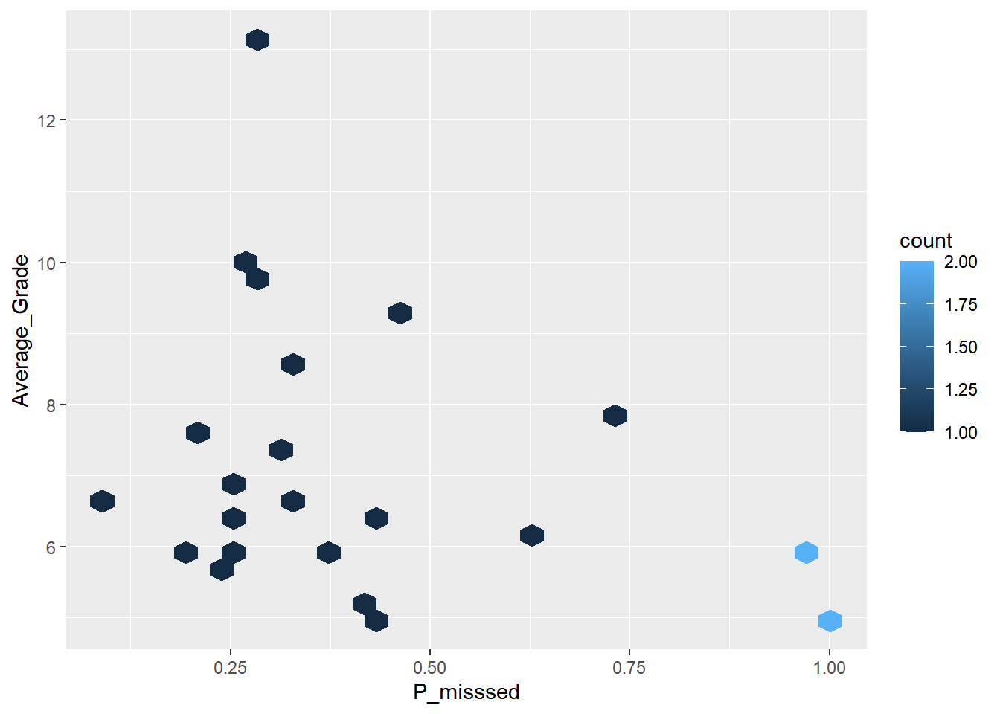

here::i_am("r-101-grade-analysis.Rproj")
library(here)
library(vroom)
library(dplyr)
library(tidyr)
library(ggplot2)
library(stringr)Exercise
Exercise 1
grades <- vroom(here("grades.csv"))Exercise2
T1 <- grades |>
summarise(min_Grade=min(Exam,na.rm=TRUE),
max_Grade=max(Exam,na.rm=TRUE),
mean_Grade=mean(Exam,na.rm=TRUE),
median_Grade=median(Exam,na.rm=TRUE))
knitr::kable(T1)| min_Grade | max_Grade | mean_Grade | median_Grade |
|---|---|---|---|
| 0 | 20 | 7.148729 | 6.5 |
Exercise 3
N <- sum(is.na(grades$Exam))The number of students who did not take the final exam is 60.
Exercise 4
ggplot(grades, aes(x = Exam)) +
geom_bar()+
xlab("Grade") +
ylab("Number of the students")
Exercise 5
T2 <- grades |>
group_by(Group) |>
summarise(number=n())
knitr::kable(T2)| Group | number |
|---|---|
| grp_1 | 29 |
| grp_10 | 23 |
| grp_11 | 25 |
| grp_12 | 33 |
| grp_13 | 29 |
| grp_14 | 32 |
| grp_15 | 34 |
| grp_16 | 33 |
| grp_17 | 35 |
| grp_18 | 36 |
| grp_19 | 29 |
| grp_2 | 23 |
| grp_20 | 33 |
| grp_21 | 36 |
| grp_22 | 27 |
| grp_23 | 33 |
| grp_24 | 35 |
| grp_3 | 32 |
| grp_4 | 32 |
| grp_5 | 27 |
| grp_6 | 23 |
| grp_7 | 31 |
| grp_8 | 30 |
| grp_9 | 29 |
Exercise 6
ggplot(grades, aes(x = Group)) +
geom_bar()+
xlab("Group") +
ylab("Number of the students")
Exercise 7
ggplot(grades, aes(x = Exam)) +
geom_bar()+
facet_wrap(vars(Group),scales = "free_x")+
scale_x_continuous(breaks = c(0,5,10,15,20))+
xlab("Grade")+
ylab("Number of students")
ggplot(grades, aes(x = Exam, color=Group)) +
geom_bar()+
scale_x_continuous(breaks = c(0,5,10,15,20))+
xlab("Grade")+
ylab("Number of students")
Exercise 8
T3 <- grades |>
group_by(`Group`) |>
summarize(number = sum(is.na(Exam)))Exercise 9
ggplot(T3, aes(x = Group, y = number)) +
geom_col()+
xlab("Group")+
ylab("Missed Exam")
Exercise 10
options(digits=3)
T4 <- grades |>
pivot_longer(!Id & !Group,names_to = "name", values_to = "Value")Exercise 11
T5 <- T4 |>
group_by(`Id`) |>
summarize(missing_grades = sum(is.na(Value)))Exercise 12
ggplot(T5, aes(x = Id, y = missing_grades)) +
geom_col()+
xlab("Id")+
ylab("Missing grades")
Exercise 13
T6 <- T4 |>
filter(str_starts(name,"Exam")) |>
group_by(Group) |>
summarise(n = sum(is.na(Value)))Exercise 14
T7 <- T4 |>
filter(str_starts(name,"Online_MCQ_")) |>
group_by(`Id`) |>
summarize(missing_online_grades = sum(is.na(Value)))Exercise 15
T8 <- inner_join(T7,grades,by="Id")
ggplot(T8, aes(x = Exam)) +
geom_bar()+
facet_wrap(vars(missing_online_grades), scales = "free_y")+
xlab("Exam Grade")+
ylab("Number")
Exercise 16
T9 <- T4 |>
filter(str_starts(name,"MCQ_")) |>
group_by(`Id`) |>
summarize(Missed = isTRUE(sum(is.na(Value))>=1))Exercise 17
T10 <- inner_join(T9,grades,by="Id") |>
count(Group, Missed) |>
group_by(Group) |>
mutate(P_misssed=n/sum(n)) |>
ungroup() |>
filter(Missed=="TRUE") |>
select(Group,P_misssed)Exercise 18
T11 <- grades |>
group_by(Group) |>
summarise(Average_Grade=mean(Exam,na.rm=TRUE)) |>
inner_join(T10,by="Group")ggplot(T11, aes(x=P_misssed,y=Average_Grade)) +
geom_hex()